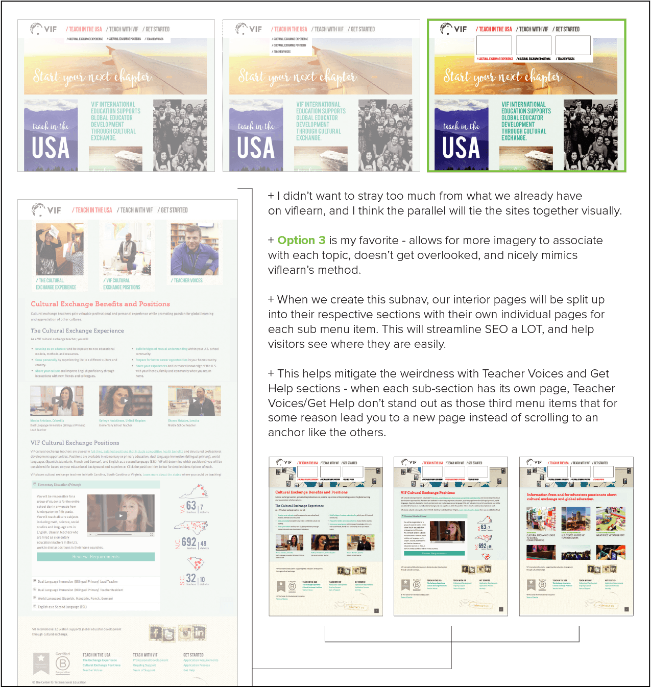

Wordpress design
Wordpress, HTML5, CSS3, Responsive design
I have worked extensively with Wordpress websites and have a strong understanding of plugins, theme editing and the dashboard. Below are two of the largest Wordpress instances I have managed in my time as a designer and developer.

After the company rebranded, I worked within a parent theme to create pages and navigation structure alongside a colleague who managed SEO and analytics.

Research into user experience on our previous site gave us the info we needed to build more detailed page designs
Navigating builders
I used my front-end experience to tailor my approach to certain page layouts and achieve specific designs without help from external developers.

Understanding theme classes and writing custom HTML allowed me to make adjustments where needed to deliver the best display possible
Plugin integration
I created a robust contact form that integrated with SalesForce to push leads into relevant pipelines. I wrote query strings that allowed me to set up a web-to-lead stream that sent our sales team a steady flow of leads from the new website.

Additional fields were added to the form to send qualified leads to the sales team and funnel interested teachers to the recruitment team.
Subdomain setup
I set up a subdomain for another department to serve as a catalog for print information to live in a more sustainable digital format. I wrote documentation so their team could manage this information on their own.


My documentation outlines the 2-8-2 column effect I built on each page to reduce line length.
Prior to the company’s rebrand, I worked with the design team to manage their latest website in Wordpress.
Start Your Journey
The theme featured travel-centric design elements and rustic textures. I built on the design lead’s vision to provide new photo sections, page elements and infographics for the site as it grew.
The design theme focused on warm colors and team support to build a strong experience
Taking the reins
Prior to Wordpress, the company used Joomla to manage its web applications, so I had experience with page builders, plugins and dashboard management. I was able to quickly design and build new pages, fine-tune HTML elements and propose new features.
A proposed change for possible subnavigation designs
Results
Managing design and production of the site gave me the experience I would need to take on more development responsibilities with the company.